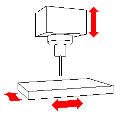

|
SHOP FLOOR DOCUMENTATION cPost_3x_scenario_mfg.CATProcess |
|
| Part operation : 1234 |
| Machine : 3-axis_Default_machine |
| Type : 3-axis Machine |  |
Numerical control attributes
| Post Processor words table | CPOST_MILL.pptable |
| NC data type | APT |
| NC data format | Point (X,Y,Z) |
| Home point strategy | FROM |
| Max machining feedrate | 100000mm_mn |
| Axial/Radial movement | false |
| Rapid feedrate | 60000mm_mn |
| MFG_INT_HELICAL | false |
| MFG_SPLIT_CIRCLE_STRAT | No split |
| 3D linear interpol. | true |
| 2D circular interpol. | true |
| 3D circular interpol. | true |
| Min interpol. radius | 0.001mm |
| Max interpol. radius | 1000mm |
| Min discretization step | 0.01mm |
| Min discretization angle | 0.1deg |
| 3D Nurbs interpolation | false |
|
Spindle attributes
|
Tool change attributes
|